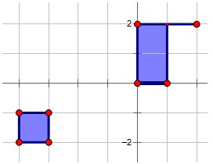

ZCC loves playing Minecraft, a sandbox construction game, with his friends. Each friend built his own house, which can be regarded as a point in a plane. However, their houses are so dispersed that they often get attacked by monsters on the way to others' houses. Fortunately, monsters won't come into being in the bright areas. ZCC planned to light a point set S up, through which his friends can visit each other safely. S should include every house. For the convenience of transport, the intersection of S and an arbitrary horizon or vertical line should be empty, a point, or a single continuous segment. This definition is similar to the definition of convex hull, but the line can only be horizon or vertical here because everything in Minecraft is formed by cubes. ZCC also wanted to minimize the area of S to save money.
After working hard for a long time, ZCC obtained the solution. However, as ZCC became more and more famous, the number of his friends increased sharply. Every time a new friend joins the game, ZCC have to calculate S again. He needs your help.
Notice that S may not be continuous, but it's guaranteed that S is continuous at any time. The situation of the following figure will never occur.
